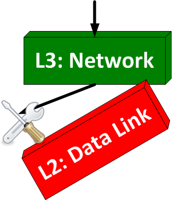

-
 CORPORATE INFO
CORPORATE INFO -
 OUR SERVICES
OUR SERVICES -
 STAY CONNECTED
STAY CONNECTED -
 CONTACT INFO
CONTACT INFO- E-mail:
Contact Us page - Telephone:
+1 972 863 CORE - Address:
3136 Round Tree Ln
Frisco, TX 75034-4589
- E-mail:
Troubleshooting with OSI Model
At Layers 1-4, there are several tools or tricks available to quickly verify normal operations. I have routinely used each of these tools for many years and expect many of them to be familiar. Many of these tools are technology-specific, meaning that one tool has an application with one technology but not another. I should also caution that the list below is not intended to be exhaustive or complete. It's just a collection of my thoughts on what I find really useful. As I remember something I mistakenly omitted, I'll update this list from time to time (so expect to see it grow).
Layer 1 — Physical
- Loopback plug — This tool has an application across most every physical layer technology. The "plug" comes in different forms between the various PHY implementations in networks, but can be generally constituted with a reversal of the Transmit and Receive leads. For Ethernet interfaces using RJ-45, the plug connects pins 1 to 3 and 2 to 6 (as described by this helpful Juniper document). The same idea applies to T1/E1 interfaces using RJ-45, where the plug connects pins 1 to 4 and 2 to 5 (as described by this helpful Cisco document). The process is easier with coax and fiber connections, as the TX and RX cables tend to be separated and can be more easily looped back.
- Loopback testing — This tool is a little different than the loopback plug, as it involves features made available in the Bellcore standards for TDM-based connections without requiring additional hardware.
- A CSU/DSU can perform a soft loopback within its circuitry to provide the same function as a hardware-based loopback plug. This loopback can be placed toward the network side or the local side.
- A CSU/DSU can transmit a signal to trigger a device on the other end of the line to perform a soft loopback. This sort of troubleshooting is common on carrier networks with the installation of local loops. Here's nice reference from RingsofSaturn.com on the different soft loopbacks (including local and remote). It's Cisco-specific, so YMMV with other vendors hardware.
- Bit Error Rate Testing (BERT) — Once a loopback is in place, the line should run clean without any bit errors. BERT allows errors to be purposely injected so as to verify their successful detection. Multiple variations of BERT exist and are certainly beyond my ability to cover them on this blog. My personal favorite is known as Quasi-Random Signal Source (QRSS), or more commonly called Quasi.
Layer 2 — Data Link
- Ethernet: Speed/Duplex — There's litany of ethernet tips that, universally, start with speed and duplex. Autonegotiation falls in this category too, as a speed or duplex mismatch can lead to lots of different problems (like collisions, runts, and the like). You should always be cognizant of the negotiated or configured speed and duplex of both sides of an ethernet connection. Here's a useful Cisco.com reference on Speed and Duplex troubleshooting. I will state that, unfortuately, the rules around one form of Ethernet (say 100-Base TX for example) won't necessarily apply to another (like 1000-Base T). Let's just say that troubleshooting Speed and Duplex tends to depend a lot on the particular vendor PHY/MAC used for the switch/hub and associated system NIC. Ugh.
- Ethernet: Switching Path — When verifying the Layer 2 path taken by system-to-system communications, you will need to know the MAC address of the two end-stations. If you have a map of the switch fabric (or technical design) for reference, you should have a hypothesis about the path through the switch fabric that frames will travel end-to-end. Otherwise, you will have to make an educated (or uneducated) guess. You can then test your hypothesis. Using just the MAC of each system, you can follow the switching path through the network switch fabric between both stations. Each switch will have a bridge table that contains the associations between MAC address and switch port, sometimes organized by VLAN, by Spanning-Tree Instance, etc. Comparing your hypothesis to the actual path taken will either validate the switching path or will expose some other issue, like a faulty switch port, UDLD issue, native VLAN mismatch, etc.
- PPP: Negotiation — I greatly admire whoever originated the saying, "Keep it simple, stupid". It can't be stressed enough and PPP negotiation problems are no different. First, don't bother with authentication until you have the PPP link working without it. Second, focus on successfully sending and receiving LCP packets to ensure completion of the LCP phase, focused on the negotiation of parameters like compression, callback, error checking. Third, verify that PPP will complete the NCP phase, for negotiating parameters like IP address/mask, name servers, and header compression. During the LCP and NCP phases, Cisco routers have a real strength for troubleshooting , since you can enable PPP negotiation debugging to see the phases in operation. Once the link works, you could then enable authentication to isolate the other layers that it will include to make your PPP session negotiate successfully.
- PPP: Troubleshooting Guide — I wanted to include this on a separate bullet, since I think this guide is really exceptional. Cisco offers a really nice set of flowcharts that illustrate the processes involved during the LCP and NCP negotiations, with link stability issues, and many more topics related to PPP. Let me state plainly that Cisco has not always been the bastion of compliance with PPP standards (ask Nortel). But the guide is very helpful and you should refer to it when necessary.
- Frame Relay: PVC status — While the basic operation of Frame Relay has its own set of troubleshooting guidelines, most issues I've faced have stemmed from problems with PVCs. In particular, PVCs are active at one end and not the other (meaning the telco didn't cross-connect the right two circuits, DOH!). You should definitely pay attention to the DLCI ordered for each circuit and the status of the PVC. If you really want to know the nitty-gritty details, head over to the IP/MPLS Forum website (which is the merger of the ATM and Frame Relay Forums). While many of the standards listed are excellent technical reading, the first standard (FRF.1.2) is the important one to keep handy. Not to tout Cisco's horn, but here's another example of a really useful doc explaining common configurations and troubleshooting steps for Frame Relay.
Layer 3 — Network
- IPv4/IPv6: ICMP ping — The most basic, useful tool for verifying end-to-end connectivity between two IP-enabled systems. This tool allows your IP-enabled system to issue ICMP-based echo packets to another system, with a variety of parameters that can expose basic problems in an internetwork. There are variations of this command, which issue UDP-based echo packets (which makes them useful for testing firewall rules). Ping is almost always the first tool for which I reach when looking at an end-to-end problem.
- IPv4/IPv6: Traceroute — This tool allows you do expose the routing path for intersystem communication (note that I said routing path, since switching has traditionally been a Layer 2 term). By sending ICMP echo packets with a small time-to-live (TTL) generally starting at 1, each system in the routing path returns an ICMP time-exceeded packet. This strategy relies on the IETF specification for IPv4 and IPv6 that each system, when routing packets, must decrement the TTL before forwarding the packet to the next system. If the TTL reaches zero, the system should return a time-exceeded packet (some systems don't on purpose, like most firewalls, IDS, etc).
Layer 4 — Transport
- TCP/UDP: Telnet — The second most basic, useful tool for end-to-end troubleshooting between two IP-enabled systems. Telnet, as a command, mainly serves to validate the open listening socket of a server system, through an internetwork which (likely) includes firewalls. If the command times out, the connection may be blocked or the server may not be listening on an open socket. Telnet will greatly assist to eliminate firewalls as the culprit of a problem (though, it also exposes some firewalls as well, when they aren't configured correctly). While Telnet clients are almost always TCP, you can find examples of UDP Telnet clients.